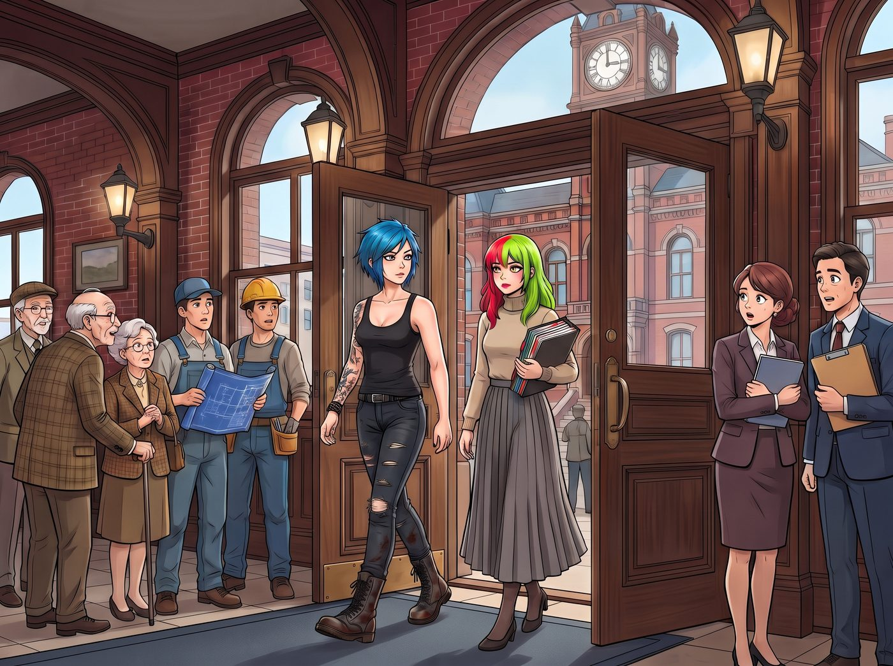

三種顏色的腦袋

一、郡政府
Jefferson 郡的郡政府大樓是一棟紅磚老建築，鐘樓、拱窗、木頭樓梯，維多利亞時代留下來的那種莊嚴。平常進出的都是來繳稅的退休老人、辦建築許可的承包商，和抱著文件夾的房地產經紀。
那天上午十點，大廳裡的人集體抬頭，看著門口走進來的兩個人。
左邊是 Chloe：藍色短髮，黑背心，右臂一整條花臂從肩膀一路爬到手腕，紅花、荊棘、藍蝴蝶和一顆黃色骷髏，軍靴上還沾著昨天的機油。
右邊是 Lily：頭頂一半鮮紅、一半螢光綠，脖子以下卻是優衣庫米色高領針織衫、灰色過膝百褶裙，懷裡抱著一個貼滿彩色索引標籤的厚資料夾，標籤按顏色分組，間距一致。
一個正端著咖啡往回走的實習生轉頭看了一眼，腳步沒停，肩膀撞上了影印機。
Chloe 從頭到腳都很一致，一看就知道不是來繳稅的。真正讓人大腦當機的是 Lily：脖子以上是龐克樂團的主唱，脖子以下是郡立圖書館的資深館員，像是有人在組裝的時候拿錯了零件，而且拿錯的那個人還很有自信。
「我說，」Chloe 壓低聲音，「這棟樓叫什麼郡來著？」
「Jefferson 郡，Chloe 學姐。是以第三任總統命名的。」
「我知道。」Chloe 嘖了一聲，「只是覺得這名字取得真晦氣。」
今天要辦的事不大。上個月郡估價處寄來一張通知，說營地的三節車廂被登記成了「移動式住宅」，要補一筆遲交的登記費和附加稅，四百七十二美元。
問題是，三節車廂早在建營地那年就連同地基、建築許可一起登記成了不動產，房產稅每年照繳。同一筆財產，被郡政府自己的系統登記了兩次。
這種事原本該是 Victoria 的律師去處理，但大小姐看了一眼金額，說了句「我的律師每小時收費比這張通知還貴」，就把信封丟回了桌上。
出門前，Lily 在她那本巴掌大的線圈筆記本上翻開新的一頁，寫下標題「本日行政成本」，第一行是：律師費（若由 Victoria 學姐處理）：預估 $800。
於是 Chloe 開著猛禽，自告奮勇當保鑣。
而 Max——Max 也來了。只是車開進郡政府停車場、她遠遠看見大廳裡排隊的人龍時，就默默把副駕駛座的椅背放平，把棒球帽蓋在臉上。
「我的社恐雷達告訴我，」她的聲音從帽子底下傳出來，「這棟樓會吸乾我今天所有的社交電量。我留守。看車。」
「看車？」Chloe 看了一眼停車場裡另外三輛退休老人的別克，「誰會偷一輛滿身泥巴的猛禽？」
「我會看好它的。」帽子底下的人已經換了一個舒服的姿勢。
二、窗口
櫃檯後面的 Dale，髮線後退，襯衫領口有點緊，名牌上寫著「櫃檯主管」。今天是週一，他已經應付了十一個抱怨房產稅漲價的老人。
他抬頭看見兩顆加起來有三種顏色的腦袋，眉頭先皺了起來。
「如果是林地露營罰單，」他沒等她們開口，「去那邊拿藍色表單，填好下個月再來排隊。」
Chloe 沒說話，往旁邊的柱子一靠，雙手抱胸，下巴朝 Lily 一抬。
Lily 把資料夾放上櫃檯，推了推眼鏡。
「早安，Dale 先生。我們不是來繳罰單的。是貴處把我們家登記了兩次。」她頓了頓，「藍色表單是新申報用的。填了的話，就會變成三次。」
Dale 張了張嘴，低頭看那個資料夾。兩個重複的物件編號用螢光筆標好了，旁邊附著一張對照表，連釘書針都釘在同一個角度。
他把編號輸進電腦，盯著螢幕看了很久。
「……是重複了。」他終於說，「去年系統遷移，有一批鄉下地塊被匯入了兩次。」他抓了抓所剩不多的頭髮，「那我得先查一下，更正要用哪一張——」
Lily 從資料夾最後一頁抽出一張表格，推進窗口。
郡政府自己的錯誤更正申請書。兩個編號、地址、更正理由，全都已經填好了，只差承辦人簽名那一欄是空的。
Dale 看著那張表，又抬頭看了看那顆紅綠相間的腦袋，沉默了三秒，然後默默拿起了印章。
蓋完章，他把更正單遞出來，停了一下，又補了一句：「……剛才藍色表單那個，抱歉。」
「沒關係，Dale 先生。」Lily 把更正單收好，「您今天處理了很多件事。」
Dale 愣住了，像是很久沒有在這個窗口聽過這句話。
走出郡政府大樓，Chloe 終於憋不住，一巴掌拍在 Lily 背上，笑得整個人往前彎。
「老天，Lily！妳看到他的臉了嗎？他剛才的表情就像——就像他攔下一個龐克要開罰單，結果對方從口袋裡掏出他自己的工作手冊，還幫他翻到了那一頁！」
「我只是把他們自己的紀錄拿給他看而已，Chloe 學姐。」Lily 把資料夾抱好，「大部分人只是沒時間把兩份紀錄並排擺在一起。」
「而且妳還跟他說『您今天處理了很多件事』。」Chloe 搖頭，「我本來準備好要瞪他的。」
「您靠在柱子上的時候，他看了您四次。」Lily 說，「我覺得您已經瞪過了。」
Chloe 想了想：「所以老娘今天身為保鑣的全部貢獻，是被一個禿頭看了四次。」
「我記下來了。」Lily 說，真的低頭寫了一行。
三、民工餐
副駕駛座上，帽子底下的人已經睡了一小覺。
「辦完了？」Max 把帽子推上去，「我的雷達準吧？」
「準到不行。妳錯過了一場行政處決。」Chloe 發動引擎，「走，吃最油的。」
碼頭邊那家漢堡店在一個路口上。Chloe 停好車，抬頭，看見了街角的路牌。
Jefferson St.
她盯著那塊牌子看了三秒。
「……這個鎮是跟我有仇嗎。」
「湯森港好幾條街都是以開國元勳命名的。」Lily 說，「Jefferson 街是其中一條，隔壁那條叫 Washington。」
「我沒問。」
卡座裡，Max 捧著雙層起司培根堡，咬得嘴角全是番茄醬；Chloe 吸著超大杯香草奶昔，眼睛還時不時往窗外那塊路牌瞪一下。
「妳的漢堡，」她指了指 Lily 的盤子，「看起來比我們的小。」
「我點了單層的。」Lily 掀開上面那片麵包。肉餅上整整齊齊地疊著兩片培根，「但菜單最下面寫著『加培根，每片一塊五』。點餐的時候，我加了兩片。」
她放下麵包，翻開筆記本，又寫了一行。
四、唱片行
水街那家二手唱片行，是 Chloe 每次來湯森港必去的地方。店面很窄，地板會吱嘎響，空氣裡是灰塵、舊紙套和線香的味道。
櫃檯後面的小伙子戴鼻環，穿一件洗到發白的金屬樂團 T 恤。他一抬頭，第一眼就看見了 Lily 的頭髮。
「嘿，酷。」他立刻從櫃檯底下抽出一張黑膠，封面是一隻在火裡尖叫的骷髏，「看妳這頭就知道是同道中人。瑞典地下死亡金屬，昨天剛到，二十分鐘的純憤怒。」
Lily 看了看那隻骷髏。
「謝謝。」她說，「請問你們有古爾德 1981 年那版《郭德堡變奏曲》嗎？」
店員舉著骷髏的手停在半空中，表情像是收銀機在找零的時候卡住了。
「……古典在後面那個箱子。」他終於擠出一句，「一美元一張。」
Lily 道了謝，去後面翻箱子了。
店員還舉著那張骷髏，一臉懷疑人生。
Chloe 從貨架後面走出來，擦掉笑出來的眼淚，把那張黑膠從他手裡拿過來，翻到背面看了看曲目。
「這張我要了。」她掏出錢包，「她不聽，我聽。你品味沒問題，老兄，只是今天推薦錯人了。」
店員的表情明顯鬆了一口氣。
Chloe 心裡默默記了一筆：保鑣的第二項貢獻，替一個陌生人保住了面子。
她順手去翻後面的一美元箱，想看看 Lily 到底在找什麼。古爾德找到了，就壓在一堆八〇年代的勵志演講唱片下面。
古爾德後面那一張，封面是一片迷幻的彩色字體。
Jefferson Airplane — Surrealistic Pillow
Chloe 的手停住了。
Lily 從旁邊探過頭來，看了一眼封面，又看了一眼 Chloe 的臉，很識相地什麼都沒說。
Chloe 盯著那張唱片看了很久。
然後她把它抽了出來，跟那張骷髏疊在一起。
「這張也要。」
「……那是六〇年代的迷幻搖滾。」Lily 小聲說，「跟死亡金屬不太一樣。」
「我知道。」Chloe 把兩張唱片一起拍在櫃檯上，「這個名字，老娘今天要搶回來。」
結帳的時候，三張唱片並排躺在櫃檯上：一美元的古爾德，二十八美元的尖叫骷髏，一美元的 Jefferson Airplane。
Max 在門口舉起了拍立得。
五、書店
下一站是 Max 想去的獨立書店，同一條街，隔三個門面。
暖黃的燈，木頭書架一路頂到天花板，一隻胖橘貓趴在收銀台旁的暖氣上。櫃檯後面是一個頭髮花白、戴老花眼鏡的女店員，正用鉛筆在一本書的扉頁上寫二手價。
三個人進門時，她抬頭看了一眼，目光從藍頭髮、紅綠頭髮上掃過去，沒有停留。
「找什麼跟我說。」然後她低頭繼續寫價格。
就這樣。
Lily 眨了眨眼，像是某種準備好的應對程序沒有被觸發，在原地站了一秒，才走去自然類書架。
Max 鬆了一口氣。這是今天最安全的地方，她的雷達一點聲音都沒有。她一個人慢慢晃進最裡面的攝影書架。
「那本拍的是尼亞灣。」
Max 嚇了一跳。女店員不知道什麼時候站到了她身後，手裡還拿著那支鉛筆。
「作者是本地人，在漁船上拍了十年。」女店員看了一眼 Max 的手，「妳也拍照吧？手指上那個黃漬，是定影液。」
Max 下意識把手藏到身後，耳朵開始發燙。
「……嗯。」
「拍什麼？」
一個很普通的問題。Max 的大腦當場藍屏，腦子裡同時跳出十個答案，每一個都蠢得要命。
自然類書架那邊，Lily 抱著一本書，安靜地看著。漫畫區那邊，Chloe 從書架縫隙裡探出半張臉，笑得很欠揍，完全沒有過來救場的意思。
「……就，」Max 的聲音小得像蚊子，「身邊的人。還有，海邊。」
「有帶嗎？」
Max 猶豫了兩秒，摸出剛才在唱片行拍的那張。
女店員推了推老花眼鏡，看了很久。
「這張好。」她說，「誰都沒在看鏡頭——兩個人都在偷瞄對方手上那一張，一臉『妳到底買的是什麼鬼』。」她抬眼看了 Max 一下，「妳是等到這一秒才按的吧。」
Max 的耳朵又紅了一點，點了點頭。
女店員用鉛筆指了指收銀台旁邊的軟木板：「我們每年春天在後面那間小房間辦一次本地攝影展，不收錢，掛一個月。有興趣的話，明年二月前把作品帶來給我看。」
然後她就走回了櫃檯，繼續寫她的鉛筆價格，好像只是告訴 Max 洗手間在哪裡。
Max 站在攝影書架前，手裡捏著那張拍立得，半天沒動。
六、本日行政成本
猛禽開上回營地的公路，下午四點的太陽從海灣那邊斜照進來。
「所以，」Chloe 握著方向盤，嘴角一直往上翹，「妳的社恐雷達。在郡政府準得要命，在一間有貓的書店裡壞掉了？」
「……它沒有壞。」Max 看著窗外，「它只是沒想到書店也會咬人。」
「明年二月？」
「我還沒決定。」
「妳剛才跟她說話的聲音，比 Lily 跟那個主管講話還小。」
「別說了。」
Chloe 笑出聲，從眼角餘光看見 Max 的嘴角也翹起來了。
後座，Lily 翻開那本線圈筆記本。
「我把今天的帳記完了。」她說，「要聽嗎？」
「念。」
Lily 清了清喉嚨。
「本日行政成本。」她念道，「律師費：零元，原預估八百元。更正規費：零元。午餐額外支出：培根兩片，三元。唱片：古爾德一元，瑞典死亡金屬二十八元，Jefferson Airplane 一元——」她停了一下，「備註：Chloe 學姐的戰利品。」
「錯了。」Chloe 說。
「哪裡錯了？」
「那不是戰利品。」Chloe 單手打著方向盤，「是戰俘。」
Lily 看了她兩秒，低頭，用筆把「戰利品」劃掉，在旁邊工整地寫上「戰俘」。
「最後一項，」她繼續念，「保鑣貢獻：被櫃檯主管注視四次。替唱片行店員保住面子一次。」
Chloe 想了想：「就這樣？」
「就這樣。」
「還不錯嘛。」她說，「比我想像的多一次。」
Max 把那張拍立得夾在遮陽板上——三張唱片並排躺在櫃檯上，兩個人一左一右，偷瞄著對方手上那一張。
然後她伸手過去，覆在 Chloe 換檔的手上。
Chloe 翻過手，跟她十指扣在一起，看了一眼後視鏡裡漸漸遠去的湯森港。
「下次再來 Jefferson 郡，」她說，「換它怕我。」
「我拒絕。」後座傳來 Lily 的聲音，「Jefferson 郡的行政窗口，我已經全部去過了。」